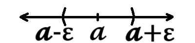

§ 1. ზღვართა თეორია
(მიმდევრობის ცნება და მისი ზღვარი)
განმარტება 1. ნატურალურ რიცხვთა სიმრავლეზე (ℕ) განსაზღვრულ ფუნქციას უწოდებენ მიმდევრობას. ყოველ ნატურალურ n რიცხვს შეესაბამება მიმდევრობის 𝔁n რიცხვი.
მაგალითი 1.
- 𝔁n = 1⁄n ⟶ {1, 1⁄2, 1⁄3, 1⁄4, … , 1⁄n}
- 𝔁n = (-1)n⁄n ⟶ {-1, 1⁄2, -1⁄3, 1⁄4, … , (-1)n⁄n}
- 𝔁n = n⁄n+1 ⟶ {1⁄2, 2⁄3, 3⁄4, 4⁄5, … , n⁄n+1}
- 𝔁n = n+1⁄n ⟶ {2, 3⁄2, 4⁄3, 5⁄4, … , n+1⁄n}
- 𝔁n = n2 ⟶ {1, 4, 9, 16, 25, … , n2}
- 𝔁n = (-1)n ⟶ {-1, 1, -1, 1, -1, … , (-1)n}
განმარტება 2. მიმდევრობას უწოდებენ ზრდადს (კლებადს), თუ ამ მიმდევრობის ყოველი წევრი მის წინა წევრზე მეტია (ნაკლებია).
მაგალითი 2. პირველ მაგალითში მოცემული მიმდევრობებიდან ზრდადია (3) და (5), რადგანაც მათი ნებისმიერი არაპირველი წევრი მეტია მის წინა წევრზე, ხოლო კლებადია (1) და (4), რადგანაც მათი ნებისმიერი არაპირველი წევრი ნაკლებია მის წინა წევრზე. რაც შეეხება (2)-სა და (6)-ს, ისინი არც ზრდადია, არც კლებადი, ვინაიდან წევრები ნიშანს გამუდმებით იცვლიან.
განმარტება 3. 𝔁n მიმდევრობა შემოსაზღვრულია, თუ არსებობს რაღაც ℳ რიცხვი, რომელსაც არ აღემატება ამ მიმდევრობის არცერთი წევრის მოდული.
მაგალითი 3. პირველ მაგალითში მოცემული მიმდევრობებიდან შემოსაზღვრულია (1), (2), (3), (4) და (6). (1) შემოსაზღვრულია 1-ით, რადგან 1-ზე მეტ მნიშვნელობას მიმდევრობის არცერთი წევრი იღებს; ანალოგიურად, (2) შემოსაზღვრულია 1⁄2-ით, (3) 1-ით, (4) 2-ით, (6) კი 1-ით. (5) არ არის შემოსაზღვრული, ვინაიდან მისი წევრები უსასრულოდ იზრდება, ანუ ნებისმიერი ℳ-ისთვის ყოველთვის მოიძებნება მასზე დიდი რიცხვი.
განმარტება 4. 𝓪 რიცხვს უწოდებენ 𝔁n მიმდევრობის ზღვარს, თუ ნებისმიერი სურვილისამებრ მცირე და დადებითი ε რიცხვისთვის, მოიძებნება ნატურალური N რიცხვი, ისე, რომ როცა n გადააჭარბებს N-ს, სხვაობა 𝔁n-სა და 𝓪-ს შორის იქნება ε-ზე მცირე.
ეს პირობა ჩაიწერება შემდეგნაირად:
სხვა სიტყვებით, n რიცხვის უსასრულოდ ზრდასთან ერთად, 𝔁n უფრო და უფრო უახლოვდება 𝓪-ს. იმ ფაქტს, რომ 𝔁n მიმდევრობის ზღვარი არის 𝓪, წერენ შემდეგი სახით:
მიმდევრობის ზღვრის ჩანაწერიდან გამომდინარეობს:
⇒ -ε < 𝔁n-𝓪 < ε ⇒
⇒ 𝓪-ε < 𝔁n < 𝓪+ε

თუკი მიმდევრობას გააჩნია ზღვარი, იგი არის კრებადი, წინააღმდეგ შემთხვევაში — განშლადი.
თეორია 1. თუ 𝔁n მიმდევრობის გააჩნია ზღვარი, მაშინ იგი შემოსაზღვრულია.
დამტკიცება 1.
⇒ 𝓪-ε < 𝔁n < 𝓪+ε
ℳ = max(|𝔁1|, |𝔁2|, |𝔁3|, … , |𝔁N|, |𝓪-ε|, |𝓪+ε|)
|𝔁n|≤ℳ
თეორია 2. თუ მიმდევრობა კრებადია, მას გააჩნია ერთადერთი ზღვარი.
დამტკიცება 2.
|𝓪-𝓫| = |𝓪-𝔁n+𝔁n-𝓫| ≤ |𝓪-𝔁n| + |𝔁n-𝓫|
Ɐ ε>0 ∃N1, n>N1 |𝔁n-𝓪|<ε⁄2
Ɐ ε>0 ∃N2, n>N2 |𝔁n-𝓫|<ε⁄2
N = max(N1, N2) n>N |𝓪-𝓫| < |𝔁n-𝓪| + |𝔁n-𝓫| < ε⁄2 + ε⁄2 = ε ⇒
⇒ 𝓪=𝓫, რაც ეწინააღმდეგება თავდაპირველ დაშვებას (𝓪≠𝓫).
განმარტება 5. αn-ს უწოდებენ უსასრულოდ მცირე მიმდევრობას, თუ მისი ზღვარი ნულია.
\(\lim\limits_{{n \to \infty}} α_n = 0\)
უსასრულოდ მცირე მიმდევრობას ახასიათებს შემდეგი თვისებები:
- მუდმივი რიცხვისა და უსასრულოდ მცირეს ნამრავლი უსასრულოდ მცირე მიმდევრობაა;
- უსასრულოდ მცირე მიმდევრობათა ჯამი, სხვაობა და ნამრავლი უსასრულოდ მცირე მიმდევრობაა;
- უსასრულოდ მცირე მიმდევრობისა და შემოსაზღვრული მიმდევრობის ნამრავლი უსასრულოდ მცირე მიმდევრობაა.